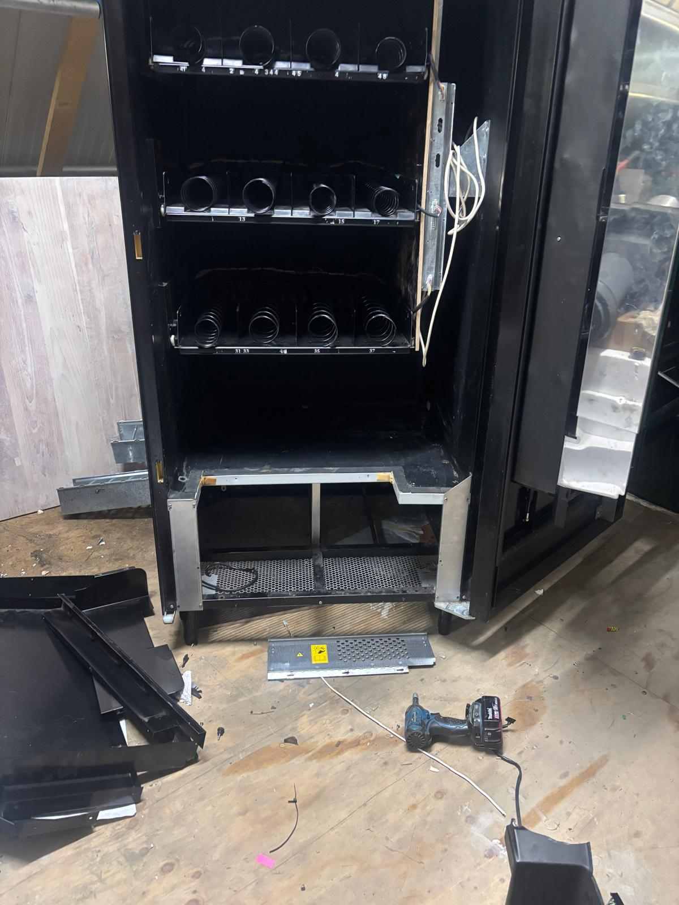
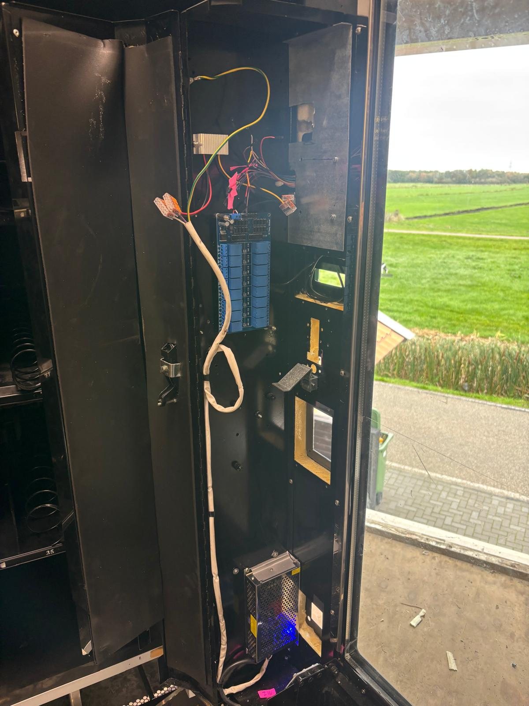
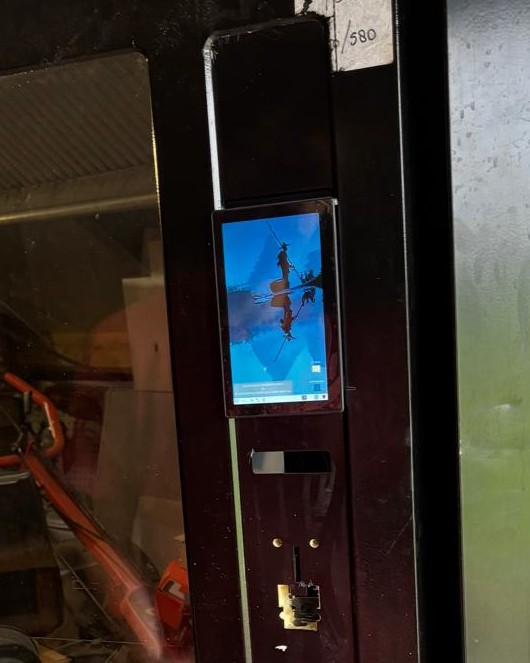

We plaatsen verkoopautomaten om onbezorgde post te verkopen — zo verminderen we verspilling, wekken nieuwsgierigheid en voorkomen we dat items voorgoed verdwijnen.
Ons Businessmodel
Elk jaar blijven talloze pakketten en items ongeclaimd, worden geretourneerd of blijven ongebruikt om verschillende redenen — verkeerde adressen, mislukte leveringen of simpelweg vergeten bestellingen. In plaats van deze items te laten verspillen, proberen wij ze een tweede leven te geven. Onze aanpak gaat verder dan het simpelweg herverdelen van pakketten — het gaat om het creëren van een duurzaam systeem dat voor iedereen voordelen biedt: het milieu, logistieke partners en nieuwsgierige klanten.
We werken nauw samen met bezorgbedrijven en andere partners om items te verzamelen die anders zouden worden weggegooid. Elk pakket wordt geanonimiseerd en klaargemaakt voor de consumentenmarkt. Door ze in een van onze geautomatiseerde verkoopautomaten te plaatsen, voorkomen we niet alleen verspilling, maar creëren we ook een unieke ervaring voor onze klanten — elke aankoop is een verrassing die nieuwsgierigheid en enthousiasme opwekt.
Ons model is gebaseerd op de principes van duurzaamheid, efficiëntie en innovatie. Elk ongeclaimd of onbezorgd item vertegenwoordigt een kans — een kans om verspilling te verminderen, iemand te verrassen met een mysterieproduct en te laten zien dat zelfs dingen die vergeten lijken waarde kunnen hebben. Deze aanpak helpt de manier waarop we denken over ongebruikte of over het hoofd geziene items te herdefiniëren, en verandert ze in betekenisvolle ervaringen terwijl we een positieve impact op de planeet hebben.
1. Wij Verzamelen
We verzamelen onbezorgde items die legaal opnieuw verkocht mogen worden, zodat onnodige verspilling wordt voorkomen.
2. Wij Vulden Aan
Elk pakket wordt opnieuw verpakt en in verkoopautomaten geplaatst op openbare locaties en vervoershubs.
3. Jij Ontdekt
Klanten kopen een mysteriepakket — elke aankoop ondersteunt duurzaamheid en circulair hergebruik.
Ons Verhaal
Het idee kwam voort uit een eenvoudige vraag — wat gebeurt er met alle onbezorgde post die nooit thuis aankomt? Na te hebben ontdekt dat veel ervan wordt vernietigd, wilden we een systeem creëren dat iedereen ten goede komt: logistieke bedrijven, het milieu en nieuwsgierige klanten.
Onze reis begon met de verkoopautomaten zelf. Omdat veel automaten afhankelijk zijn van propriëtaire technologie geproduceerd door slechts een paar bedrijven, besloten we open-source alternatieven te onderzoeken. Alles is nu intern ontworpen en gebouwd! Onze software is volledig open-source en te vinden hier:
VendOS op GitHub.
De machines zijn gebouwd met eenvoudige, gebruiksvriendelijke elektronica die gemakkelijk te repareren is. Deze aanpak stelde ons in staat verkoopautomaten te creëren die zowel betaalbaar als onderhoudbaar zijn. Onze allereerste machine was tweedehands, met alle elektronica vervangen om aan onze normen te voldoen.

Development log: Onze machines zijn volledig tweedehands, en beginnen vaak zo.

Development log: De machines worden van binnen volledig door ons ontwikkeld.

Development log: We voorzien elke machine met een touchscreen scherm.
Wat begon als een experimenteel concept, is uitgegroeid tot een duurzaam model dat recycling, innovatie en een vleugje mysterie combineert. Elke verkoopautomaat vertegenwoordigt een kleine stap naar een meer circulaire economie — en een leuke verrassing voor iedereen die meedoet.
Op Zoek naar Locaties
Wij zijn actief op zoek naar nieuwe locaties voor onze verkoopautomaten. We zoeken ruimtes met veel voetverkeer, zoals kantoren, universiteiten, vervoershubs, winkelgebieden en gemeenschapscentra. Samenwerken met ons biedt de kans deel uit te maken van een innovatief, duurzaam project terwijl u iets unieks en spannends aan uw bezoekers biedt. Wij zijn nog druk in de weer met het perfectioneren van onze automaten en het uitbreiden van ons netwerk, dus dit is het perfecte moment om aan boord te komen.
Als u een ruimte heeft die een van onze machines kan huisvesten, horen we graag van u. Laten we samenwerken om duurzaamheid, nieuwsgierigheid en gemak naar uw locatie te brengen.
Contact
Als u wilt samenwerken, een van onze verkoopautomaten wilt hosten of meer wilt weten, neem contact met ons op. Wij staan altijd open voor een gesprek: